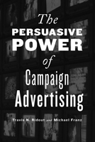

<body bgcolor="#FFFFFF" text="#000000" link="#0000FF" vlink="#CC0000" alink="#CC0000"><center><hr width="350" size="1" align="center" noshade>How campaign ads persuade voters<hr width="350" size="1" align="center" noshade><p><a href="https://cdcshoppingcart.uchicago.edu/Cart/ChicagoBook.aspx?ISBN=9781439903322&&PRESS=temple" target="_top">Buy this book!</a> | <a href="https://cdcshoppingcart.uchicago.edu/Cart/Cart.aspx?PRESS=temple" target="_top">View Cart</a> | <a href="https://cdcshoppingcart.uchicago.edu/Cart/Cart.aspx?PRESS=temple" target="_top">Check Out</a></p><p></p></center><!--none//--><h1>The Persuasive Power of Campaign Advertising</h1>
<h3>Travis N. Ridout and Michael M. Franz</h3>
<P>cloth 1-4399-0332-8 $70.50, Mar 11, <FONT COLOR=#990033>Available</FONT>
<br>paper 1-4399-0333-6 $26.95, Mar 11, <FONT COLOR=#990033>Available</FONT>
<br>Electronic Book 1-4399-0334-4 $26.95 <FONT COLOR=#990033>Available</FONT>
<BR> 200 pp
5.5x8.25
24&nbsp;tables 14&nbsp;figures
</P><BLOCKQUOTE><I>"</I>The Persuasive Power of Campaign Advertising<I> combines academic knowledge and the wisdom of experience in election campaigns. It is an important contribution to the fields of political communication and campaigns. I recommend this insightful analysis to political professionals, working journalists, communications specialists, as well as students of campaigning and lobbying. It is an excellent book for university students studying campaigns, political communication, and public relations."</I><BR>&#151<B>James A. Thurber</B>, Distinguished Professor and Director, Center for Congressional and Presidential Studies at American University</I></BLOCKQUOTE>
<p><em>The Persuasive Power of Campaign Advertising</em> offers a comprehensive overview of political advertisements and their changing role in the Internet age. Travis Ridout and Michael Franz examine how these ads function in various kinds of campaigns and how voters are influenced by them.
</p>
<p>The authors particularly study where ads are placed, asserting that television advertising will still be relevant despite the growth of advertising on the Internet. The authors also explore the recent phenomenon of outrageous ads that "go viral" on the web-which often leads to their replaying as television news stories, generating additional attention.</p>
<p><em>The Persuasive Power of Campaign Advertising</em> features the first analysis of the impact on voters of media coverage of political advertising and shows that televised political advertising continues to have widespread influence on the choices that voters make at the ballot box.
</p>
<BR>&nbsp;<h2>Excerpt</h2><P>Excerpt available at <a href="http://www.temple.edu/tempress">www.temple.edu/tempress</a></p>
<BR>&nbsp;<h2>Reviews</h2>
<p><I>"Travis Ridout and Michael Franz have developed a persuasive message. Using an impressive array of data, they show when ads matter and when they do not matter. As a result, </I>The Persuasive Power of Campaign Advertising<I> is a book all serious scholars of political communication should have on their shelves." </I><br>&#151<b>John G. Geer</b>, Distinguished Professor of Political Science at Vanderbilt University
<p><i>"The book offers a comprehensive overview of political advertising and its changing role in the Internet age, with an emphasis on television advertising. Marshalling an impressive amount of empirical evidence from recent elections, the authors examine precisely how ads function and influence voters in a variety of campaign environments.... </i>The Persuasive Power of Campaign Advertising<i> makes a compelling case that exposure to campaign advertising exerts widespread influence on the choices voters make at the ballot box. The authors' incisive analyses and interpretations leave little doubt that campaign ads help shape voter preferences.... This timely and well-written book is a fine example of social science that is highly relevant and readily applicable to practical politics.... A must-read for those involved in professional politics, especially political media and advertising specialists." </i><br>&#151<b><i>Campaigns & Elections</i></b>
<p><i>"For anyone interested in the role of ads in campaigns, this is a very valuable book. Summing Up: Recommended."</i><br>&#151<b><i>Choice</i></b>
<p><I>"Ridout and Franz have done scholars of political communication, behavior, and campaigns a great service in writing this book."</I><br>&#151<b> <I>Political Communication</I></b>
<p><i>"</i>The Persuasive Power of Campaign Advertising<i> contributes significant insights into campaign advertising for students of political science, journalists, and anyone involved or interested in political campaigns. As a major source of information on candidates, television advertising has a strong effect on American democracy, and this work gives a basis for understanding how it works."</i><br>&#151<b><i>Washington State Magazine</i></b>
<p><i>"[T]he book succeeds in establishing the ubiquity of ad impact... The authors have done a masterful job in laying out issues."</i><br>&#151<b><i>Party Politics</i></b>
<p><i>"[A] detailed look at the complex effects of political advertising. It is a comprehensive work that analyzes the effects of campaign advertising in Senate and Presidential races across several elections between 2000 and 2008.... </i>The Persuasive Power of Campaign Advertising<i> makes a strong case that political advertising is related to vote choice and candidate favorability. Even more, the book demonstrates that campaign context, advertising content, and receiver characteristics play a role in explaining when political advertising works.... [T]his book is a persuasive cautionary note against generalizing advertising effects found in one election to another and a productive starting point for those embarking on the difficult task of explaining why variability occurs."</i><br>&#151<b><i>Perspectives on Politics</i></b>
<BR>&nbsp;<h2>Contents</h2><P>
<p>Preface<br>
1. The Role of Campaign Advertising<br>
2. The Problem of Persuasion<br>
3. A Brief Primer on Data and Research Design<br>
4. How Race Context Matters<br>
5. How Ad Negativity and Emotional Appeals Matter<br>
6. How Receiver Characteristics Matter<br>
7. How Ad Coverage in News Matters<br>
8. The Future Study of Ad Effects<br>
Appendix A: Variable Coding<br>
Appendix B: Full Model Results from Chapter 4<br>
Appendix C: Additional Model Results from Chapter 5<br>
References<br>
Index</p>
</P><BR>&nbsp;<H2>About the Author(s)</H2>
<P><strong>Travis N. Ridout</strong> is Associate Professor of Political Science at Washington State University and a coauthor (with Michael M. Franz, Paul B. Freedman, and Kenneth M. Goldstein) of <em>Campaign Advertising and American Democracy</em> (Temple).</P>
<P><strong>Michael M. Franz</strong> is Associate Professor of Government and Legal Studies at Bowdoin College and a coauthor (with Paul B. Freedman, Kenneth M. Goldstein, and Travis N. Ridout) of <em>Campaign Advertising and American Democracy</em> (Temple).</P>
<BR><H2>Subject Categories</H2>
<p><A HREF="/tempress/political.html" TARGET="_top">Political Science and Public Policy</a>
<BR><A HREF="/tempress/mass_media.html" TARGET="_top">Mass Media and Communications</a>
</p>
<p align="center"><a href="https://cdcshoppingcart.uchicago.edu/Cart/ChicagoBook.aspx?ISBN=9781439903322&&PRESS=temple" target="_top">Buy this book!</a> | <a href="https://cdcshoppingcart.uchicago.edu/Cart/Cart.aspx?PRESS=temple" target="_top">View Cart</a> | <a href="https://cdcshoppingcart.uchicago.edu/Cart/Cart.aspx?PRESS=temple" target="_top">Check Out</a></p><p><font face="Arial" size="1"><a href="copyright.html" onMouseOver="window.status='Web Copyright Policy';return true;" onMouseOut="window.status=''" title="Web Copyright Policy">&copy;</a> 2015 <a href="http://www.temple.edu" target="new" onMouseOver="window.status='Link to Temple University home page';return true;" onMouseOut="window.status=''" title="Link to Temple University home page">Temple University</a>. All Rights Reserved. http://www.temple.edu/tempress/titles/2117_reg.html</font></p>